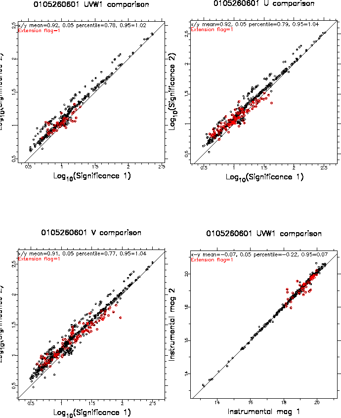
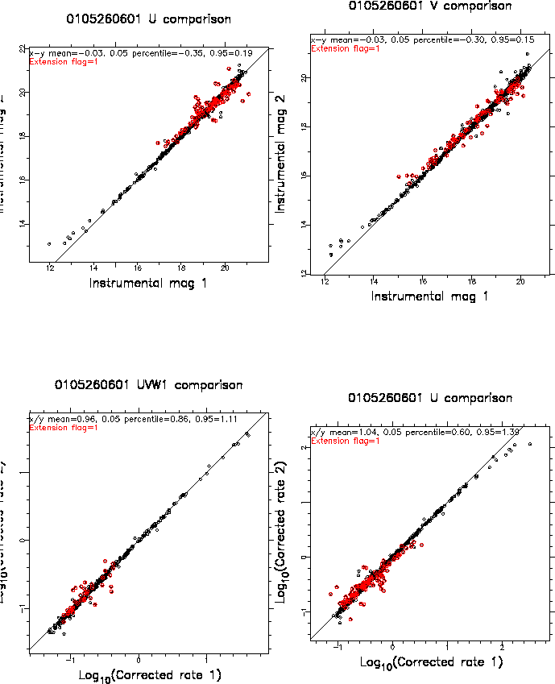
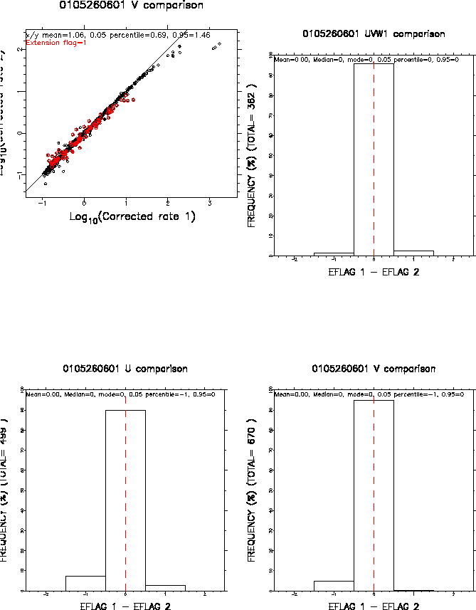

The optional postscript plot file can be useful in identifying any problems in the processing of the mosaiced sky images. The following diagrams were obtained from ommergelists by reducing the OM data for observation 0105260601 using the omichain.
Figure 2 compares the RA and Dec differences in coordinates from the matched sources of the two input files (ie srclist1 - srclist2 source). At the top of these two histograms, the mean, median and mode values of the distributions are given, the latter using the method of Bickel 2002 (Computational Statistics Volume 39, Issue 2, April 2002, Pages 153-163). It is a good idea to check these diagrams for skewness, which may indicate that the astrometry is not too good- the difference between the mean and mode should usually be no greater than about 0.2 arc seconds, and the median should be in between the two.
Figures 3 to 5 compare various parameters of the matched sources from the two input source-list files. In these diagrams, the 1 and 2 on the x and y axes, respectively, refer to the matched sources from srclist1 and srclist2, respectively.
Figure 3 shows an example of plots comparing the significances, instrumental magnitudes, corrected count-rates and histrograms of the differences in extension flags, from the matched sources of the two input files.
|  |
|  |
|  |